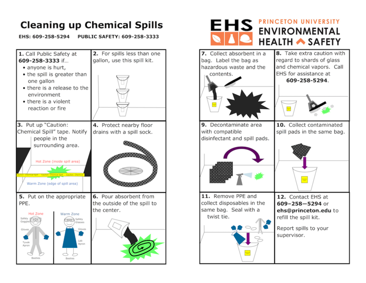

Step 1: Identify the Hazard
Recognize any potentially hazardous conditions or situations in your school or college environment.
This could include things like damaged equipment, exposed wiring, slippery floors, blocked emergency exits, or unsafe behavior.
Step 2:Assess the Risk
Evaluate the level of risk associated with the hazardous condition.
Consider factors such as the likelihood of an accident or injury occurring and the potential severity of the consequences
Step 3: Notify a Responsible Authority
Report the hazardous condition to a responsible authority figure or staff member as soon as possible.
This could be a teacher, principal, school administrator, custodian, or other designated personnel who can address the issue.

Step 4: Provide Details
When reporting the hazardous condition, provide specific details about the nature and location of the hazard.
Be as descriptive as possible to ensure that the problem can be accurately identified and addressed promptly
Step 5: Use the Proper Channel
Follow the established protocol or procedures for reporting hazardous conditions within your school or college.
This may involve filling out a formal incident report form, contacting a specific department or office, or speaking directly to a designated safety officer.
Step 6: Document Evidence
If possible, take photos or videos of the hazardous condition as evidence to support your report.
This can help demonstrate the severity of the issue and facilitate its resolution.
Step 7: Follow Up
If the hazardous condition persists or if you do not receive a timely response to your report, follow up with the responsible authority or escalate the matter to higher levels of authority if necessary.
Ensure that appropriate action is taken to address the hazard and prevent potential harm.
Step 8: Encourage Others to Report
Encourage your classmates and peers to report hazardous conditions as well.
Safety is everyone's responsibility, and raising awareness about the importance of reporting hazards can help create a culture of safety within your school or college community.
Step 9: Stay Informed
Familiarize yourself with the school or college's policies and procedures related to health and safety, including reporting protocols for hazardous conditions.
Stay informed about any updates or changes to these policies.
Step 10: Lead by Example
Set a positive example for others by promptly reporting hazardous conditions and actively promoting a safe and healthy environment for everyone in your school or college community.